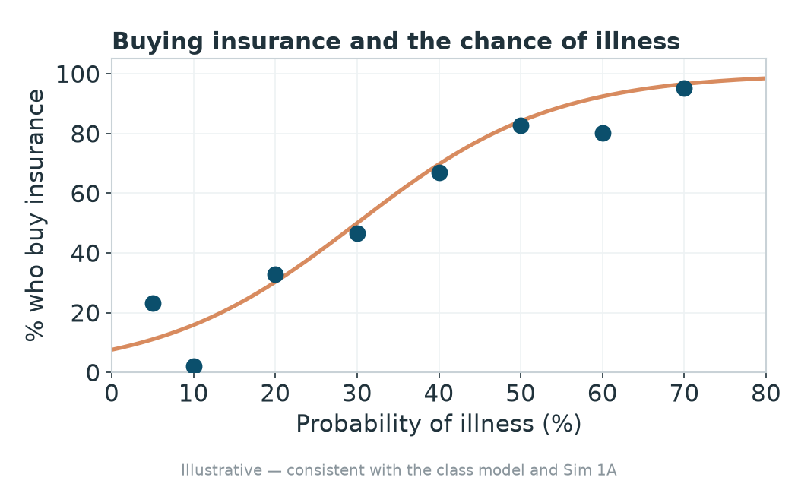
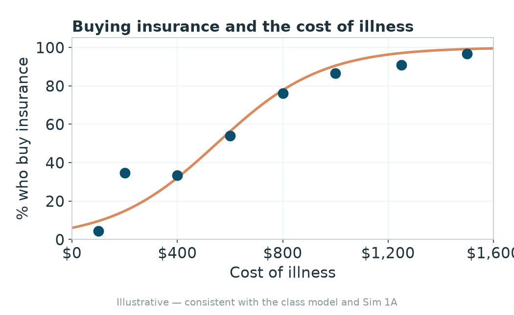

Set the Premium
ECON 372 · Economics of Health Care Markets
Ian McCarthy
Emory University
From buyer to seller
- Two weeks ago, in the first simulation, you were the buyer, deciding whether a premium was worth paying.
- Today you switch sides. You are the insurer, and your one job is to set the premium.
What you found as the buyer
The model from Tuesday: your willingness to pay is the expected cost of care plus a risk premium.
That risk premium grows with three things:
- how uncertain the illness is
- how costly the illness could be
- how risk-averse you are
The more likely the illness, the more you buy

The more costly the illness, the more you buy

How an insurer makes money
- To be insured, people pay more than their care costs on average.
- Your profit is the premium you charge minus what your enrollees’ care costs you.
- Today, you choose the premium.
What you do
- Each round, you set one premium.
- The premium is the whole product. No deductibles, copays, or networks, and if a buyer gets sick the plan pays the full bill.
- Buyers choose the cheapest plan that is still worth it to them.
- Whoever ends with the most money wins.
One prediction before we start
- When everyone competes for the same buyers, where do premiums end up?
- How many people end up with no insurance?
We come back to what you find on Tuesday and give it a name.